Villa d'architecte
Toit-terrasse, piscine, enduits · Gard
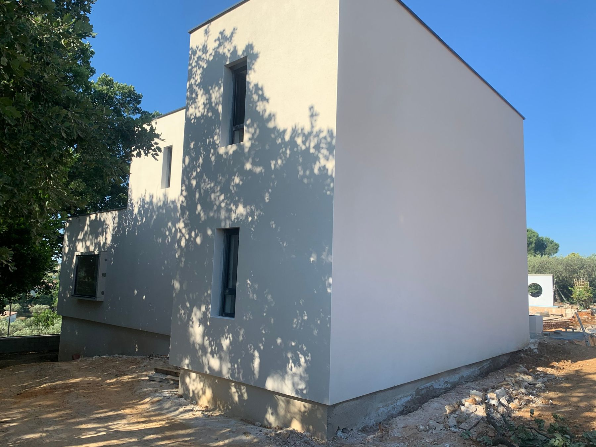
Gros œuvre · Calvisson, Gard · Occitanie
Entreprise de gros œuvre et de maçonnerie générale. Villas d'architecte, maisons individuelles, bâtiments : fondations, structure, murs. Tous modes constructifs.
Nous confier un projetL'entreprise en une phrase
Tout ce qui se voit dans une maison repose sur ce qui ne se voit plus une fois le chantier fini. Nous faisons cette partie-là, avec une équipe structurée, un conducteur de travaux, des sous-traitants que nous connaissons, et une règle simple : ce qui a été dit est fait, dans le délai et dans le budget annoncés.
AKTUG CONSTRUCTION intervient dans le Gard, l'Hérault et sur l'ensemble de l'Occitanie, pour les particuliers, les architectes et maîtres d'œuvre, les promoteurs et dans le cadre d'appels d'offres.
Villas d'architecte, maisons individuelles, extensions lourdes.
Un interlocuteur technique qui lit les plans et tient les réunions de chantier.
Logements collectifs, petits bâtiments, lots gros œuvre.
Réponses structurées, mémoire technique, planning tenu.
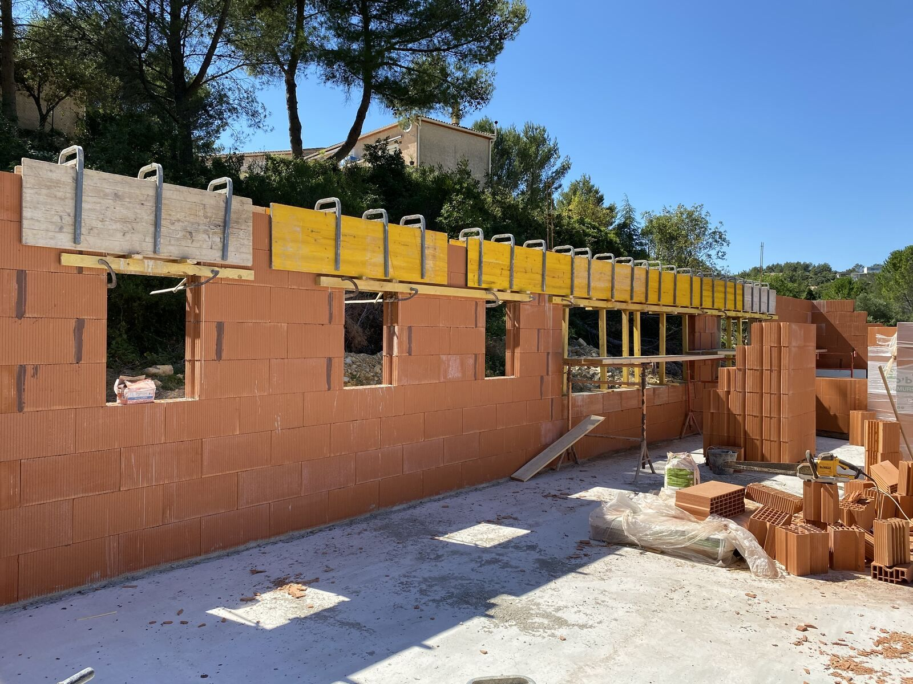
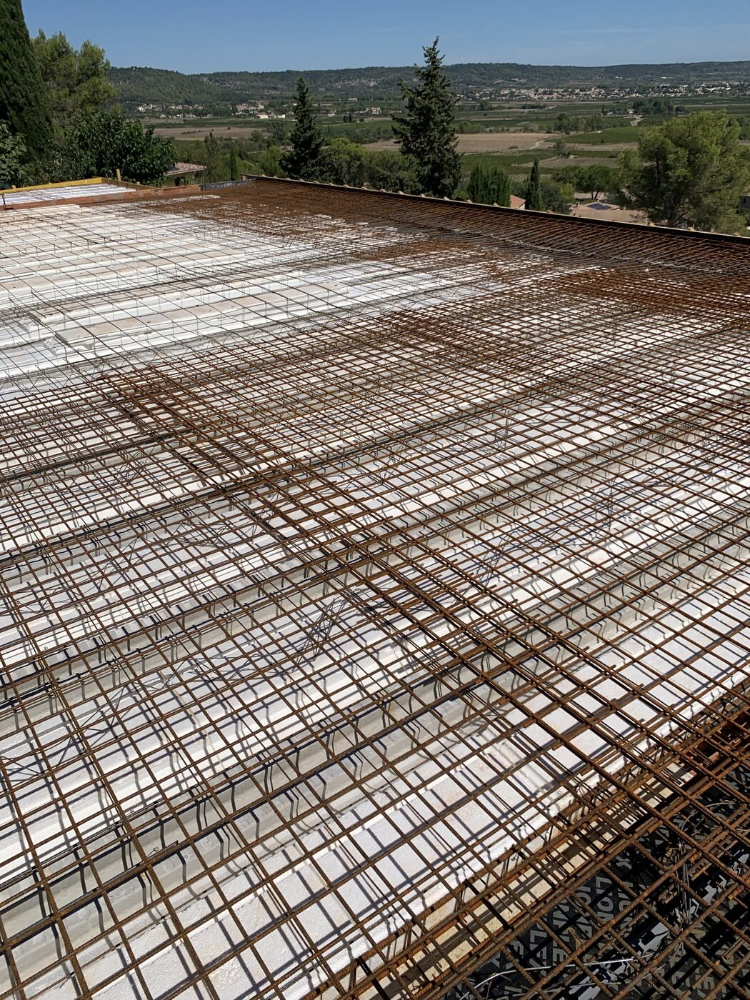
Villas d'architecte
Fondations, voiles, dalles, toit-terrasse, piscine : le gros œuvre complet d'une villa d'architecte, livré propre aux lots suivants.
Découvrir nos réalisationsNos réalisations
Une sélection de nos chantiers dans le Gard et l'Hérault, du terrassement à la dernière passe de maçonnerie : villas d'architecte, maisons individuelles, logements collectifs, rénovation lourde.
Toit-terrasse, piscine, enduits · Gard
Béton brut apparent, calepinage des banches
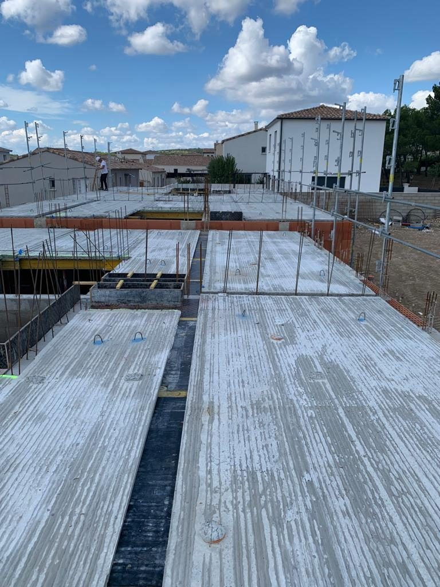
Plancher en prédalles préfabriquées
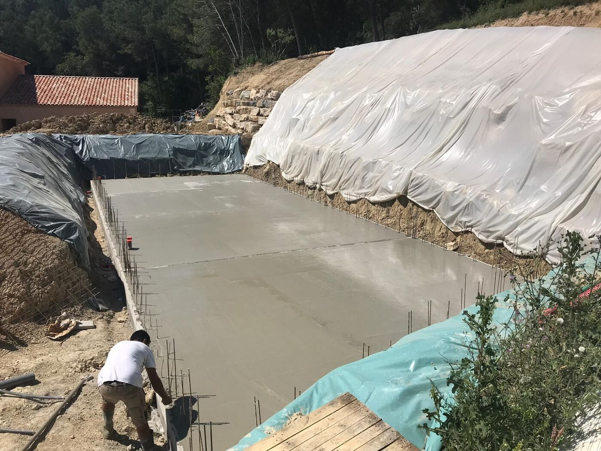
Radier et voiles coulés en place
Ferraillage vérifié avant coulage
Monomur, poteaux et linteaux béton, chaînages
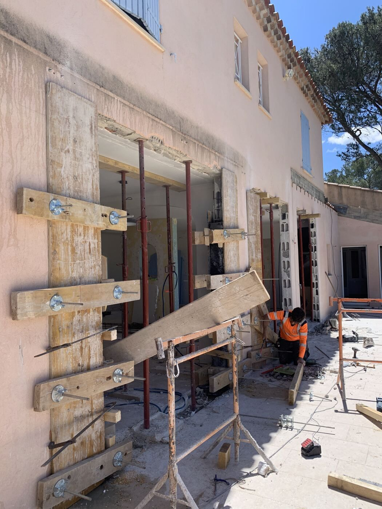
Création d'ouvertures dans des murs porteurs
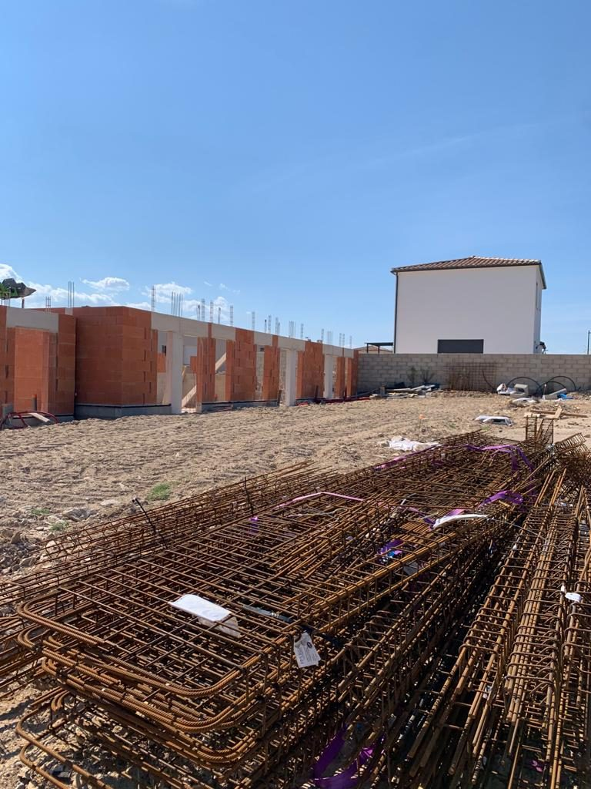
Maçonnerie brique et poteaux béton armé
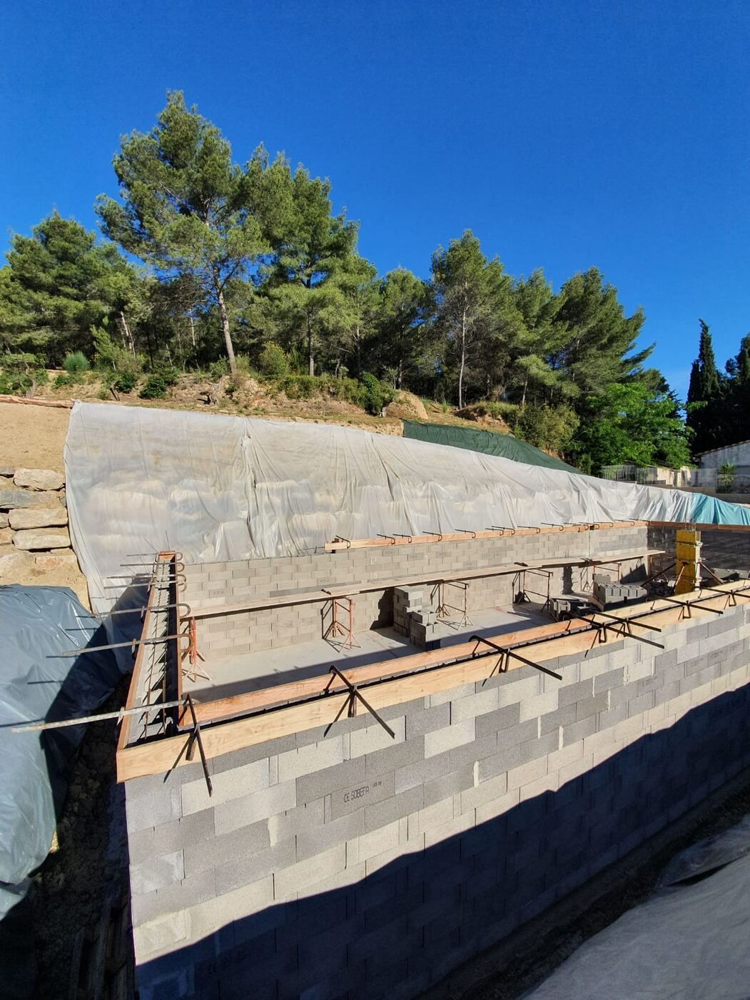
Blocs à bancher, terrain en pente
Fondations, voiles enterrés, plancher haut
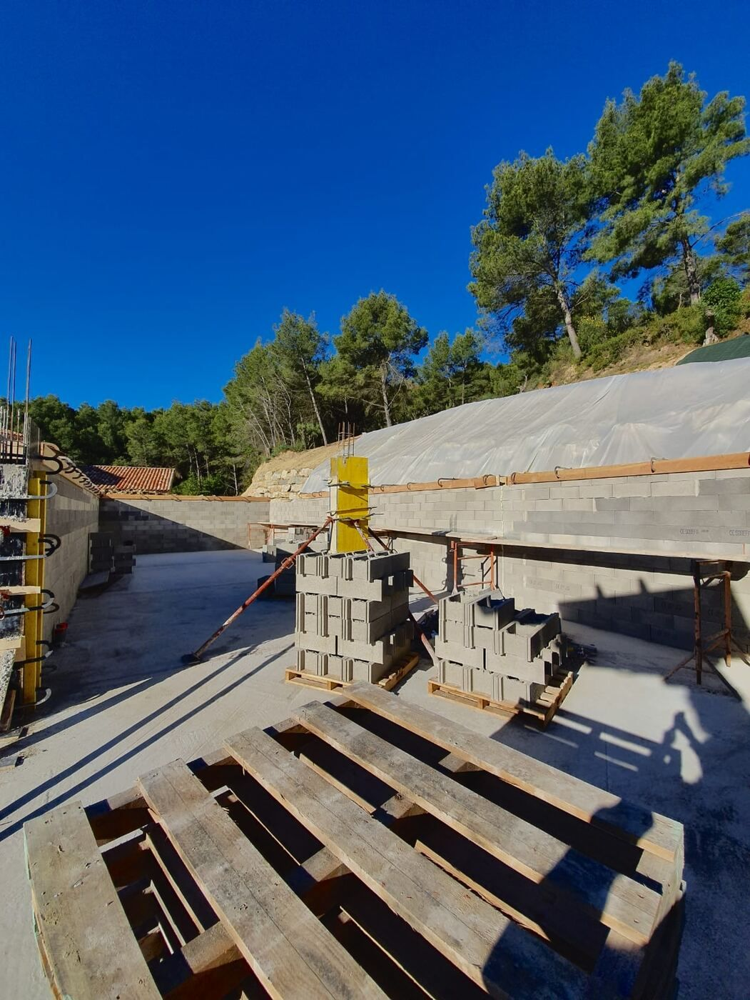
Pose des poutrelles sur vide sanitaire
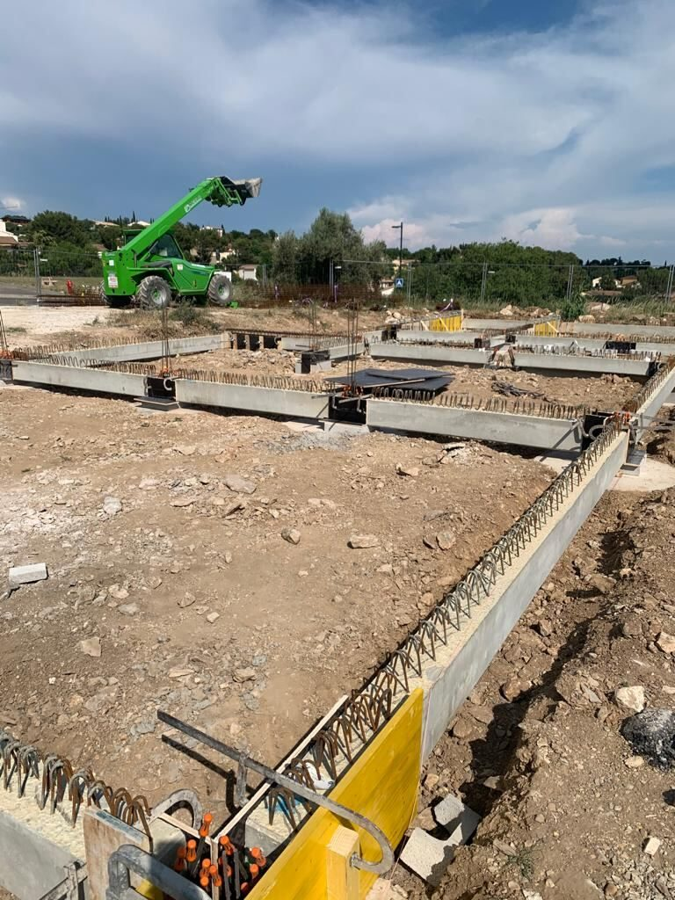
Terrassement, semelles et longrines
Photos prises sur nos chantiers par nos équipes. Les noms des architectes et des maîtres d'ouvrage ne sont publiés qu'avec leur accord. Cliquez sur une photo pour l'agrandir.
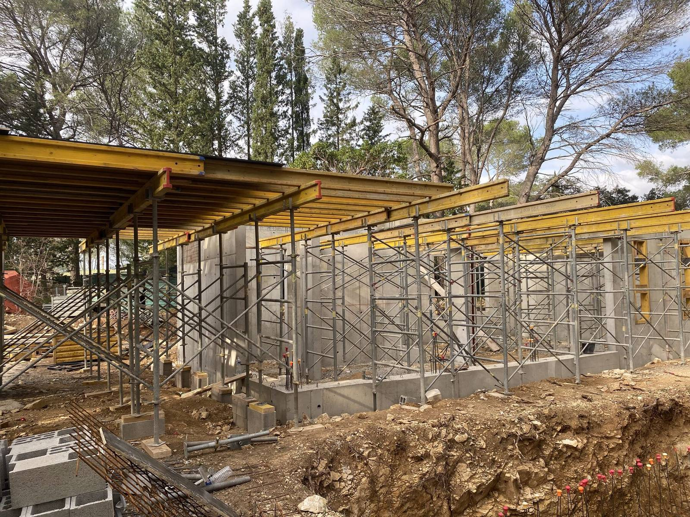
Béton banché
Calepinage des banches, qualité de parement, traitement des reprises : quand le mur reste apparent, tout se joue avant le coulage.
Nos savoir-faireSavoir-faire
Le bon mode constructif dépend du sol, du projet, du budget et du dessin de l'architecte. Nous les maîtrisons tous, ce qui nous permet de conseiller sans parti pris et de tenir le lot gros œuvre de bout en bout.
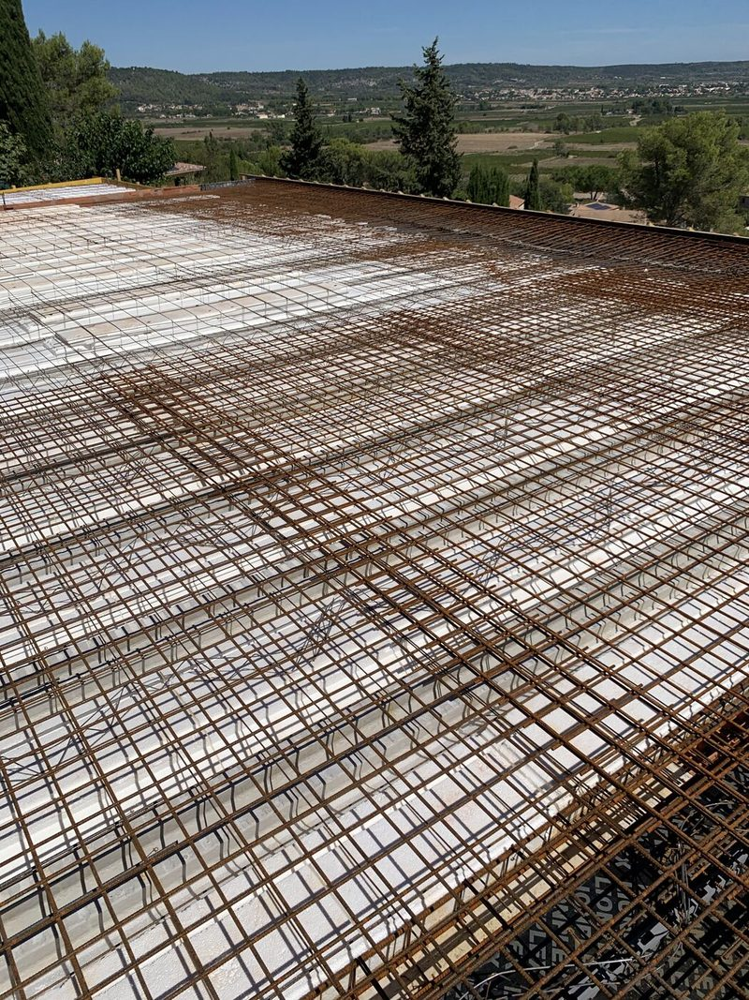
Le cœur du métier. Semelles filantes et isolées, radiers, longrines, voiles de soutènement et de façade, dalles pleines, poteaux et poutres coulés en place. Nous travaillons à partir des plans du bureau d'études béton, nous vérifions les ferraillages avant chaque coulage et nous documentons chaque phase.
Pour villas d'architecte, sous-sols, piscines, logements collectifs, bâtiments d'activité.
Élévations en blocs béton ou en brique, chaînages, linteaux, appuis. Une maçonnerie d'aplomb, aux joints réguliers, qui simplifie tous les corps d'état qui passent après nous.
Pour maisons individuelles, extensions, murs de clôture, petits collectifs.
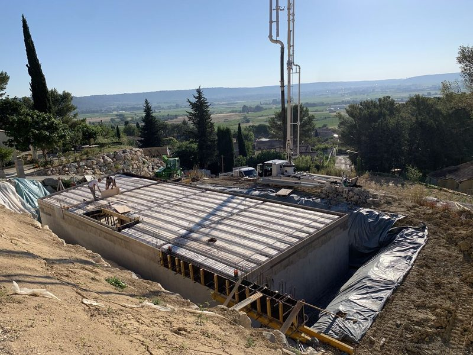
Murs porteurs et murs de clôture en pierre, parements, reprises d'ouvrages anciens avec des mortiers adaptés. Le patrimoine bâti du Gard et de l'Hérault se travaille avec ses propres règles.
Pour mas et bâtisses anciennes, murs de clôture, parements de façade.
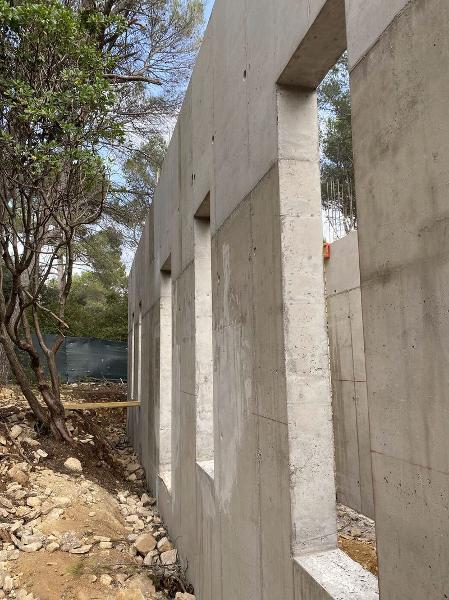
Voiles coulés en banches pour des murs qui restent apparents. Calepinage des banches, choix des trous de banches, qualité de parement et traitement des reprises : quand le béton est le matériau fini, rien ne se rattrape ensuite.
Pour villas contemporaines, murs de soutènement apparents, architecture en béton brut.
Prémurs, prédalles, escaliers et poutres préfabriqués pour accélérer les chantiers tout en garantissant la qualité des éléments. Levage, calage et clavetage réalisés par nos équipes.
Pour logements collectifs, bâtiments à plannings serrés, escaliers.
La solution la plus courante pour les maisons individuelles. Pose des poutrelles et des entrevous, chapeaux, treillis, dalle de compression. Rapide, économique, fiable quand elle est bien exécutée.
Pour maisons individuelles, extensions, planchers d'étage.
Structures combinant poteaux béton et charpente métallique ou bois, platines et scellements, réservations précises pour que les lots suivants s'emboîtent sans reprise.
Pour hangars, bâtiments d'activité, grandes portées, surélévations.
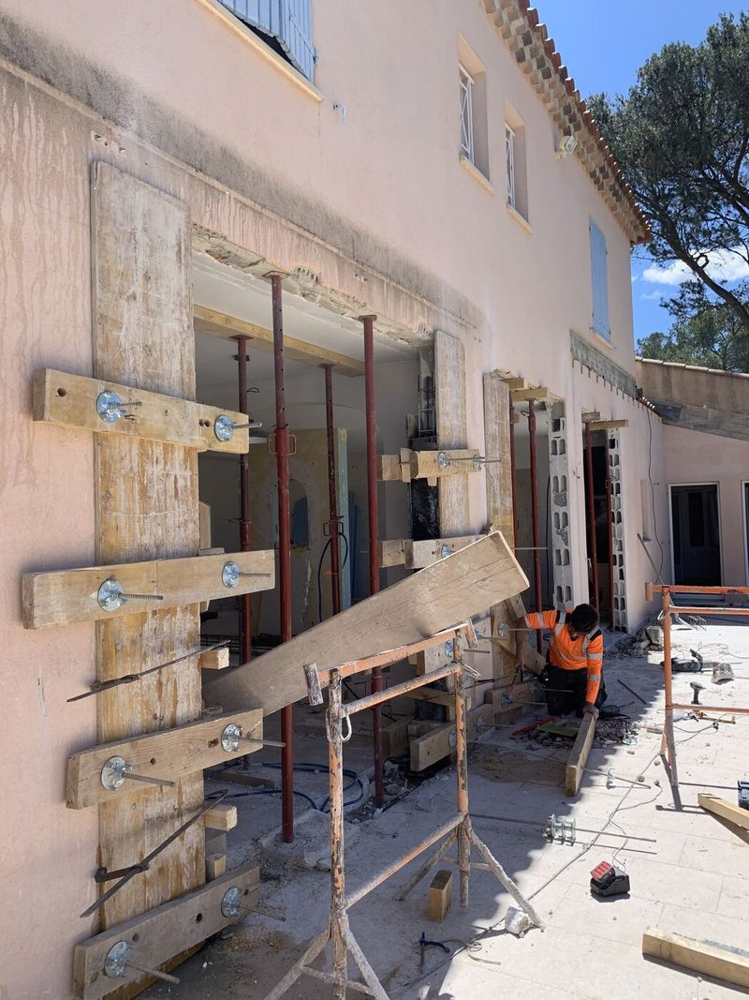
Reprises de fondations, création d'ouvertures dans des murs porteurs, remplacement de planchers, renforts de structure. Des interventions qui se préparent avec un bureau d'études et s'exécutent par phases, en gardant le bâti existant en sécurité.
Pour maisons et mas à transformer, bâtiments à restructurer, mises aux normes.
Terrassements généraux et en tranchées, réseaux enterrés, regards, dallages et accès. Nous prenons le terrain tel qu'il est et nous le rendons prêt à construire, puis prêt à vivre.
Pour tous nos chantiers, du terrain nu à la livraison.
Notre méthode
Cinq étapes, toujours dans le même ordre, quel que soit le projet. C'est ce qui permet de tenir un délai et un budget.
Lecture des plans, visite du terrain, devis détaillé poste par poste avec les hypothèses retenues. Pas de forfait opaque : vous savez ce que vous achetez.
Plans d'exécution avec le bureau d'études, planning, commandes de matériaux, installation de chantier, sécurité.
Un conducteur de travaux responsable du chantier, des points réguliers, des comptes rendus écrits, des photos à chaque phase.
Situations établies sur l'avancement réel de chaque poste du devis, jamais sur une estimation globale.
Visite contradictoire, levée des réserves, dossier des ouvrages exécutés remis. Garantie décennale et assurances en règle.
Valeurs & mission
Notre mission : construire des ouvrages qui durent, pour des gens qui nous ont fait confiance, sans jamais leur donner une raison de le regretter.
Un mur d'aplomb, une dalle de niveau, un ferraillage conforme. Nous ne livrons pas « à peu près ». Ce que nous ne sommes pas fiers de montrer, nous le refaisons.
Un devis signé est un engagement. Un délai annoncé est un délai. Quand un imprévu survient, et il en survient sur tous les chantiers, nous le disons tout de suite, chiffres à l'appui.
Nous planifions avant de commencer, nous commandons à temps, nous ne laissons pas un chantier s'endormir. Le respect du budget commence par un devis honnête.
Personne ne se blesse pour aller plus vite. Équipements, protections collectives, consignes claires : la sécurité des équipes et des riverains n'est pas négociable.
Le gros œuvre s'apprend sur le chantier, auprès de ceux qui savent. Nous formons nos jeunes, nous faisons progresser ceux qui le veulent et nous respectons ceux qui nous ont appris.
Nous construisons pour les cinquante prochaines années, pas pour la réception. Les bons matériaux, les bons dosages, le bon temps de séchage : ce sont les détails invisibles qui font la différence dans vingt ans.
L'entreprise
AKTUG CONSTRUCTION est une SARL de gros œuvre et de maçonnerie générale installée à Calvisson, dans le Gard, depuis 2016. Nous réunissons une dizaine de personnes, un conducteur de travaux et un réseau de sous-traitants qualifiés avec lesquels nous travaillons chantier après chantier.
Cette organisation nous permet de tenir plusieurs chantiers en parallèle, de répondre à des appels d'offres et d'être pour un architecte ou un promoteur un interlocuteur unique, du terrassement à la réception du lot gros œuvre.
L'entreprise est dirigée par son fondateur, présent sur les chantiers. Nous ne vendons pas un projet pour le confier à d'autres : ce sont nos équipes et nos partenaires habituels qui l'exécutent.
Architectes & maîtres d'œuvre
Un lot gros œuvre tenu par une entreprise qui lit les plans, prévient avant les problèmes et laisse un chantier propre aux lots suivants.
Zone d'intervention
Notre siège est à Calvisson, entre Nîmes et Montpellier. Nos chantiers se situent principalement dans le Gard et l'Hérault ; nous étudions les projets plus éloignés en Occitanie au cas par cas.
Questions fréquentes
Les réponses courtes. Pour tout le reste, écrivez-nous : nous répondons par écrit, avec les plans sous les yeux.
Notre cœur de métier est le lot gros œuvre complet : terrassement, fondations, structure béton, maçonnerie, planchers, dallages et VRD associés. Selon les projets, nous assurons aussi la charpente et la couverture, activités couvertes par notre assurance décennale, pour livrer un clos et couvert.
Pour les autres corps d'état, nous travaillons en coordination avec les entreprises choisies par l'architecte, le maître d'œuvre ou le client.
Oui. Nous construisons des maisons individuelles à partir des plans d'un architecte, d'un maître d'œuvre ou d'un dessinateur, et des plans d'exécution d'un bureau d'études béton. Nous intervenons en marché de travaux d'entreprise, pas en contrat de construction de maison individuelle (CCMI) : vous gardez la maîtrise de votre projet et de vos autres lots.
Vous nous transmettez les plans et l'état d'avancement du projet (terrain, permis, planning). Nous visitons le terrain, nous relisons les plans et nous vous remettons un devis détaillé poste par poste, avec les hypothèses retenues. Le délai de chiffrage vous est annoncé dès le premier échange.
Oui. AKTUG CONSTRUCTION est couverte par une assurance de responsabilité civile professionnelle et une assurance de responsabilité décennale souscrites auprès de Gan Assurances. L'attestation en cours de validité est fournie sur simple demande et jointe à nos marchés.
Oui. Nous répondons aux consultations de promoteurs, de maîtres d'ouvrage publics et privés et d'entreprises générales pour des lots gros œuvre, avec un mémoire technique et un planning. Nous intervenons également en sous-traitance pour des entreprises générales.
Notre siège est à Calvisson, dans le Gard. Nous intervenons dans tout le Gard et l'Hérault, et plus largement en Occitanie selon les projets : autour de Nîmes, Montpellier, Sommières, Lunel, Vauvert, Alès et Uzès.
Votre projet
Décrivez-nous votre projet. Nous répondons par écrit, avec les plans sous les yeux.
Nous écrireContact
Villa, maison, extension, bâtiment, lot gros œuvre d'une opération : décrivez-nous votre projet, sa commune et son avancement. Nous vous répondons par écrit, avec les questions utiles pour établir un chiffrage sérieux.
Nous échangeons par e-mail et via ce formulaire. Cela nous permet de vous répondre avec les plans sous les yeux, et de garder une trace de ce qui a été dit.
Pour un chiffrage rapide, joignez